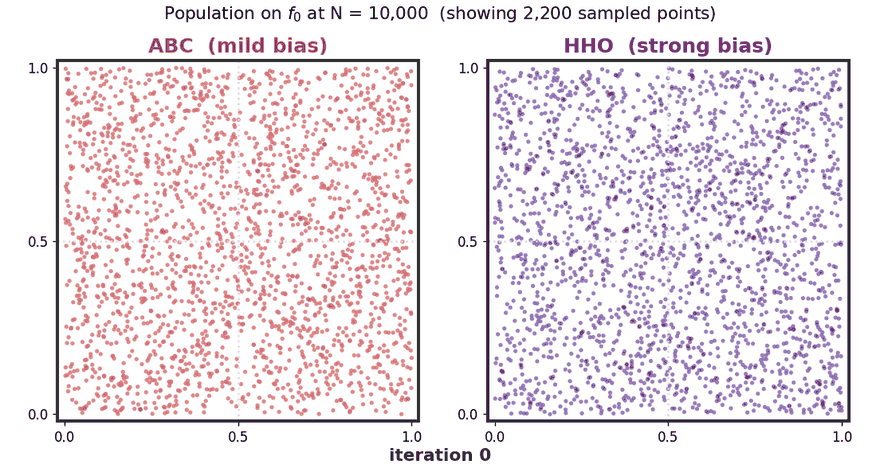
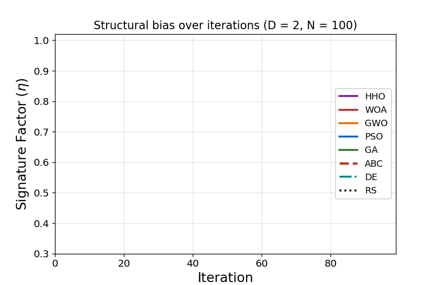
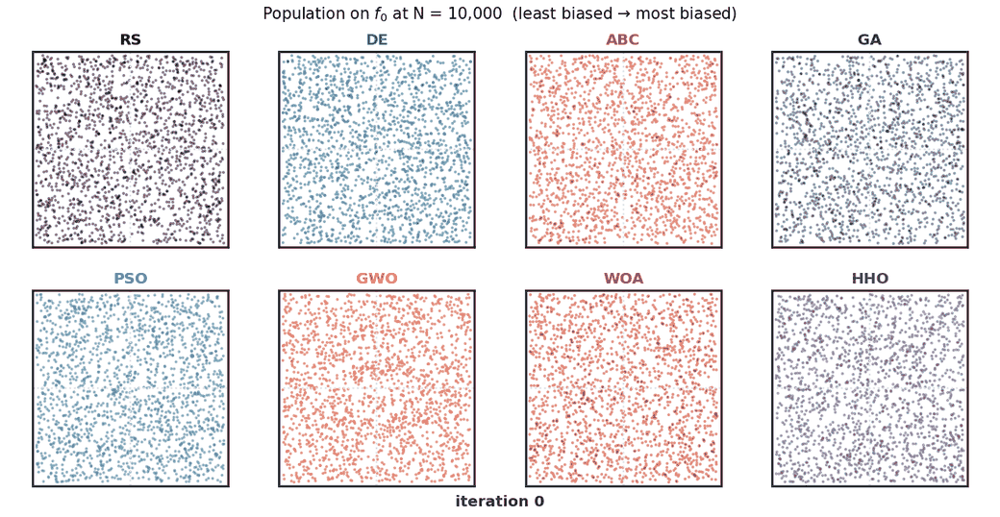
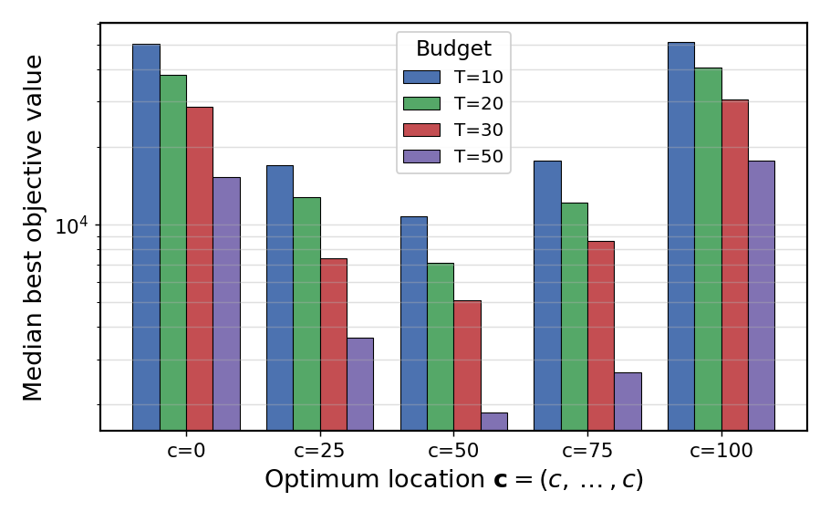
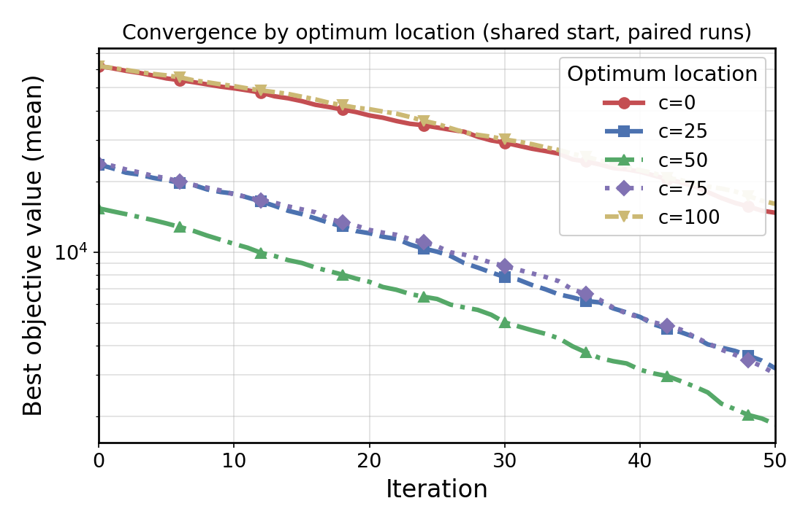

Structural bias is the tendency of a population-based optimizer to favour particular regions of the search space regardless of the objective function — an artefact of the search operators themselves rather than of the problem being solved.
When an algorithm is structurally biased, its population is drawn toward a fixed region (often the centre of the domain) even when nothing in the objective justifies it. This quietly distorts benchmarking: an algorithm may appear strong simply because test functions place their optima where the algorithm is already inclined to look. For a genuine black-box optimizer — where the optimum could be anywhere — bias is therefore a liability. A broader treatment of the topic appears in our survey, “Structural bias in metaheuristic algorithms” (Swarm and Evolutionary Computation, 2025).
The Artificial Bee Colony (ABC) algorithm has been applied across thousands of problems since 2005, yet its own structural bias had never been systematically characterised. This work fills that gap.
Most ABC research focuses on new variants and faster convergence; far less attention has gone to the algorithm's intrinsic search behaviour — the very property that determines whether its benchmark results are trustworthy. If ABC silently prefers certain regions, then comparisons built on it may reward that inclination rather than true optimization ability.
We therefore ask a simple but consequential question: does ABC have a structural bias, and if so, how strong is it relative to other widely used metaheuristics? Answering this requires diagnostics that isolate operator behaviour from the landscape, and a like-for-like comparison against a representative set of algorithms.

We characterise ABC's bias with two complementary tools. The BIAS toolbox applies a battery of statistical tests to the distribution of final solutions across many independent runs on f0. The Generalized Signature Test (GST) measures population concentration geometrically, tracking the fraction of empty cells (the Signature Factor, η) as the search proceeds and locating the population's centre of mass. Running on f0 ensures any detected structure comes from the operators, not the objective. ABC is benchmarked against GA, PSO, DE, WOA, GWO, HHO, and Random Search (RS).


To connect the measured bias to performance, a Center-Offset experiment places the optimum at five locations across the domain under constrained budgets, with all locations starting from the same initial population.


In short, ABC is a comparatively well-behaved algorithm: its structural bias is real but minor, and far smaller than that of several popular swarm methods. This supports its continued use while flagging the budgets and problem placements where even a mild bias can matter.
If this work or its code is useful in your research, please cite:
@article{rajwar_abc_structural_bias,
title = {Investigating Structural Bias in the Artificial Bee
Colony Algorithm: A Systematic Analysis},
author = {Rajwar, Kanchan},
journal = {Applied Soft Computing},
year = {2026},
note = {Under review; citation to be updated on acceptance}
}
Methodology references (Generalized Signature Test; structural-bias survey):
@article{rajwar2024gst,
title = {Uncovering structural bias in population-based optimization
algorithms: A theoretical and simulation-based analysis of
the Generalized Signature Test},
author = {Rajwar, Kanchan and Deep, Kusum},
journal = {Expert Systems with Applications},
volume = {240}, pages = {122332}, year = {2024},
doi = {10.1016/j.eswa.2023.122332}
}
@article{rajwar2025survey,
title = {Structural bias in metaheuristic algorithms: Insights,
open problems, and future prospects},
author = {Rajwar, Kanchan and Deep, Kusum},
journal = {Swarm and Evolutionary Computation},
volume = {92}, pages = {101812}, year = {2025},
doi = {10.1016/j.swevo.2024.101812}
}